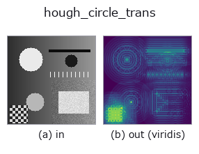

features op• Datenarten: image → image
• Aufruf: fullseye.apply(img, "hough_circle_trans", a=0.5, b=0.5) (das 2-D-Modell ist ein Bild plus zwei skalare Regler a,b∈[0,1])
• HALCON-Äquivalent: hough_circle_trans (Bedeutung und Parameter sind in der HALCON-Referenz nachzulesen)

*Die Abbildung ist die tatsächliche Ausgabe auf einer synthetischen 128×128-Eingabe. Links Eingabe, rechts Ausgabe. Punktwolken als Draufsicht-Streudiagramm (Helligkeit = z), 1-D-Reihen als Linie, Volumen als Maximum-Projektion entlang z, Videos als mittleres Bild, komplexe Bilder als Betrag; Rückgabewerte, die kein Bild ergeben, werden als Werte gezeigt.*
*Die Ausgabe ist in einer viridis-artigen Falschfarbe dargestellt (dunkles Violett = klein, Gelb = groß), damit ein Feld von Größen — Abstand, Phase, Orientierung, Tiefe — lesbar ist.*
Regler a durchfahren (0,1 / 0,5 / 0,9, der andere Regler auf Standard):
▸ hough_circle_trans: knob a sweep (docs site)
*Regler b ändert die Ausgabe nicht (gemessen: identisch bei 0,1 / 0,5 / 0,9).*
Auf anderen Bildern (synthetische Szene / Foto / Münzen. Obere Reihe: Eingaben, untere Reihe: deren Ausgaben. Regler auf Standard):
▸ hough_circle_trans: other inputs (docs site)
*Die 4. Spalte ist eine Farb-Eingabe (H,W,3). Dieser Op verarbeitet Farbe, ohne Kanäle zu vermischen (er faltet den Farbkanal nicht als dritte Raumachse).*
Die Hough-Transformation zur Kreiserkennung. Berechnet `skimage.transform.hough_circle auf der Kantenmaske mit einer Reihe von Kreisvorlagen mit Radius 4 bis 19 (in Schritten von 3) und gibt die maximale Antwort über alle Radien, normiert auf [0,1], zurück. Entspricht HALCONs hough_circle_trans` (Return the Hough-Transform for circles with a given radius.) (HALCON gibt den Radius explizit an, hier handelt es sich jedoch um eine Annäherung, die einen festen Bereich per Brute-Force durchsucht).
> Die ausführliche Beschreibung unten ist der Originaltext — Zusammenfassung und Überschriften sind übersetzt.
`a がエッジ抽出の閾値を振り、b` が探索する半径の上限を決める
(`radii = arange(4, max(7, round(4 + 32*b)), 3)。既定の b=0.5` は
従来どおり半径 4〜19)。★**対象より小さい半径しか探していないと、この op は
落ちずに意味の無い累算器を返す**。実写のコイン 24 枚(半径 19〜31 px)で
非極大抑制して数えると `b=0.5 で 13 峰、上限まで広げた b=1.0` でも
19 峰にしかならない ―― 半径の刻みが 3 で、しかも全半径の最大に潰して
いるため。半径を明示できる HALCON の同名 op の代わりにはならない
(`examples/poc_real_coin_metrology.py` が数字で示す)。
• Leitfaden zur Familie gallery2d_features
• Katalog der Beispieldaten (Download-URLs / Lizenzen) — 2-D nutzt skimage.data (BSD/Public Domain) plus synthetische Bilder, 3-D nennt Download-URLs echter Datenquellen (Stanford, PDS, …).
• Herkunft und Literatur der Operatoren — die Quellen der Forschung/Verfahren, auf denen diese Operatorfamilie beruht.
• Der kanonische Algorithmus (Autor, Jahr) und seine Anwendungen stehen im Familienleitfaden oben.
Das Programm unten ist nachweislich lauffähig (gleiche Eingabe wie die Abbildung). In der Studio-Hilfe wird dieser Block zu Schaltflächen, die es sofort laden und ausführen.
hough_circle_trans 0.50 0.50
▸ Load this pipeline · Load & run
• gallery2d_features — py -3.11 examples/gallery2d_features.py
• poc_real_coin_metrology — py -3.11 examples/poc_real_coin_metrology.py
image als Eingabe)identity · gaussian · mean_box · bilateral · unsharp · median · min_filter · max_filter
features)blob_count · area_frac · count_contours · total_length · vol_count · sk_euler · sk_entropy_feat · sk_blur_effect
*Provenance: ops.py — 2D Operator-Registry. Diese Notiz wird von tools/opdocs.py md erzeugt (nicht von Hand bearbeiten).*
© 2026 Kazufumi Furuse — Fullseye operator documentation. Licensed under Apache-2.0.
{kind=link}
{kind=link}